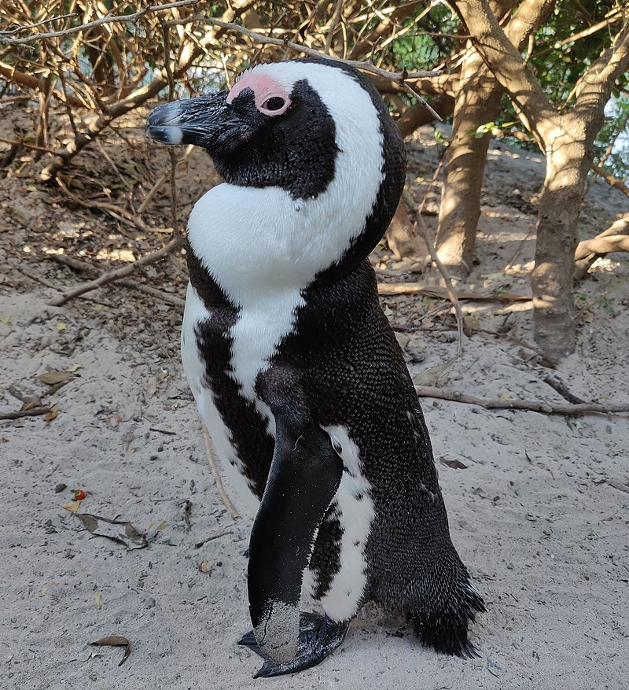
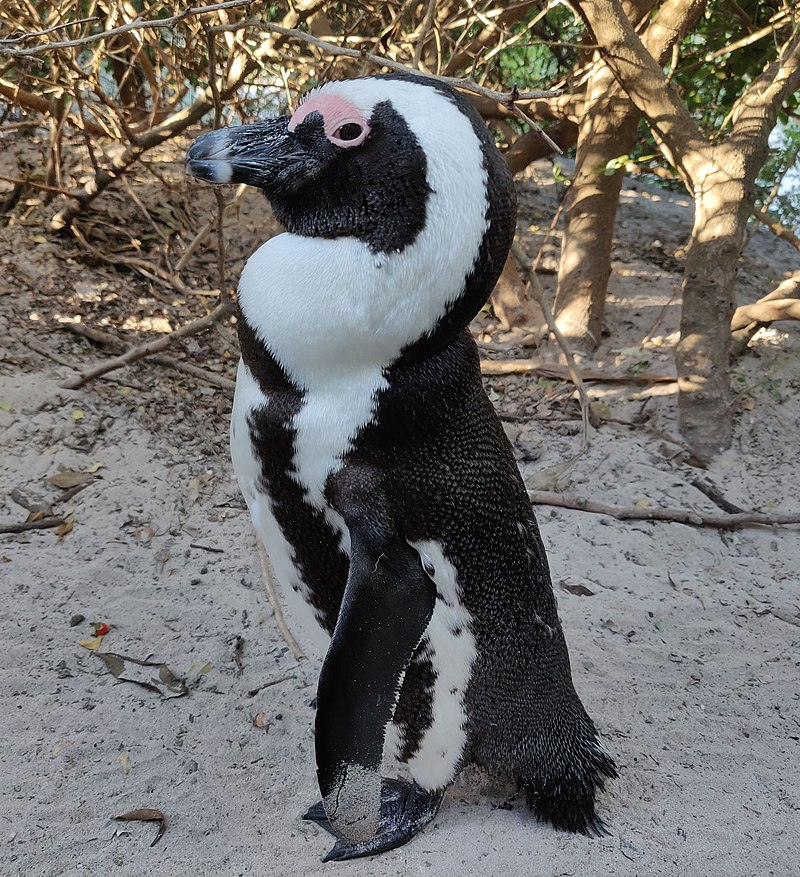

Spheniscus demersus
(African Penguin)
 

The African penguin (Spheniscus demersus), also known as Cape penguin or South African penguin, is a species of penguin confined to southern African waters. Like all penguins, it is flightless, with a streamlined body and wings stiffened and flattened into flippers for a marine habitat. Adults weigh an average of 2.2–3.5 kg (4.9–7.7 lb) and are 60–70 cm (24–28 in) tall. The species has distinctive pink patches of skin above the eyes and a black facial mask. The body's upper parts are black and sharply delineated from the white underparts, which are spotted and marked with a black band.